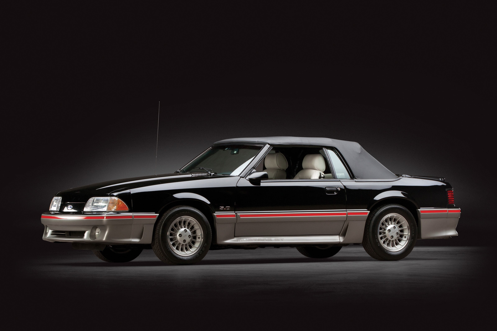
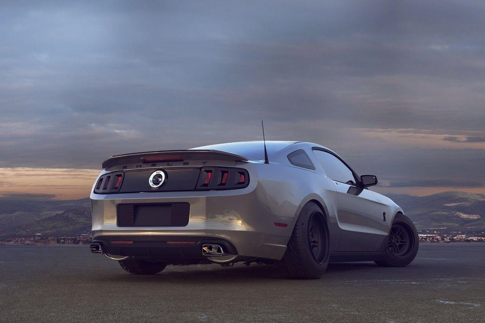

.png)
Unleashing the Era Of Mustangs
The first-generation Ford Mustang was manufactured by Ford from March 1964 until 1973. The introduction of the Mustang created a new class of automobiles known as the pony cars. The Mustang's styling, with its long hood and short deck, proved wildly popular and inspired a host of competition.
Mustang Models
1965 Mustang

1975 Mustang
1983 Mustang
1994 Mustang

2014 Mustang
2022 Mustang
Mustang Features
Ford marketed the original Mustang as a 1965 model, though Ford made several production changes to cars built after August 1964, by which time Ford had already sold 120,000. Hobbyists refer to early Mustangs as "1964½" models, while post-August cars are "late" 1965s.
For 1971, the Ford Mustang gained yet more size and bulk, and a new buttressed rear window gave the sedan a distinctly different profile than earlier Mustangs. As emissions rules tightened and Americans moved away from muscle cars, engine choices eroded.
The exterior of the 1983 Mustang saw mostly minor modifications. As the Mustang approached the generation’s mid-point, its nose became longer and smoother. It still had the four-eyed appearance in the front that many associate with this era.
The fourth-generation Ford Mustang is an automobile that was produced by the American manufacturer Ford for the 1994 through 2004 model years. For 1994 the Ford Mustang underwent its first major redesign in fifteen years, being introduced in November 1993 and launching on December 9, 1993.
The 2014 Ford Mustang is a rear-wheel-drive, four-seat sports car that competes with the Chevrolet Camaro, Dodge Challenger and Hyundai Genesis. It is offered in V6, V6 Premium, GT, GT Premium and Shelby GT500 trim levels, all of which are available in coupe and convertible body styles.
This Mustang trim model stands apart from the others with its high-output V8 engine and exclusive track-ready performance features. As one of the Mustang's Premium models, the Mach 1 Premium also comes standard with a very long list of comfort, tech, and safety features.
The New 2024 FORD Mustang
Phone Number
6300896440